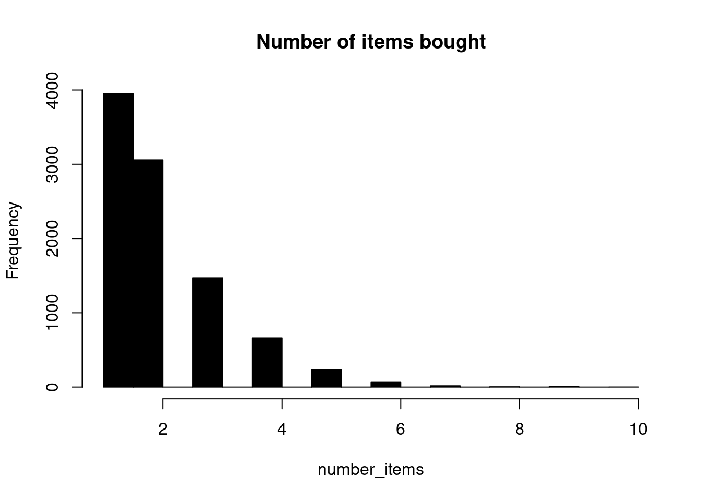

library(tidyverse)
library(knitr)
library(data.table)
library(DT)
dat <- setDT(read.csv( "BreadBasket_DMS.csv" ))
dat <- dat[Item != "NONE"]
head(dat[sample(1:nrow(dat), 10)]) %>% datatable()Association Analysis
Maybe you have heard of a grocery store that carried out analysis and found out that men who buy diapers between 5pm to 7pm were more likely to buy beer. The grocery store then moved the beer isle closer to the diaper isle and beer sales increased by 35%. This is called association analysis which was motivated by retail store data.
In this blog I will explore the basics of association analysis. The goal is to find out:
Items frequently bought together in association analysis this is called support. Let say you have ten transactions and in those ten 3 transactions have maize floor, rice and bread the the support for maize floor, rice and bread is 3/10 = 0.3. This is just marginal probability. In other terms the percentage of transactions these items were bought together.
In this example the support is written as Support({bread, maize floor} –> {rice} ). In general this is written as Support of item one and item 2 is Support({item1} –> {item 2}). Item 1 and item 2 may contain one or more items.
We also want to find out if someone bought a set of items what other set of item(s) were they likely to buy. In association analysis this is called confidence. In our above example let say that you find the proportion of transactions that contained maize floor and bread are 0.4. Then the confidence is the proportion of those transactions with maize floor, bread and rice/proportion of transactions that contained maize floor and bread. Then the confidence is 0.3/0.4 which is 0.75. In other word 75% of those who bought maize floor and bread also bought rice.
- Confidence in this example is denoted as Confidence({bread, maize floor} –> {rice} ) and in general this is Confidence({item 1} –> {item 2} ).
The lift refers to how the chances of rice being purchased increased given that maize floor and bread are purchased. So the lift of rice is confidence of rice/support(rice). Support of rice is the number of transactions that contain rice.
- Lift({Item 1} -> {Item 2 }) = (Confidence(Item1 -> Item2)) / (Support(Item2))
To make sense of all these I’m going to use a bakery to find association rules between items bought manually and then towards the end I will use r package arules which uses apriori algorithm to find association between items bought. The data set is available on kaggle as BreadBasket_DMS. We start by first having a glimpse of this data set.
Data Cleaning and Exploratory Data Analysis
First step is to transform the data set into wide format. Column headers will be items sold in the bakery and the rows will be populated with 1 and 0 indicating whether that item was bought for that transaction.
dat2 <- dcast(Date+Time+Transaction~Item, data = dat, fun.aggregate = length)
#dat2[, NONE := NULL]
sample_cols <- sample(4:ncol(dat2), 5)
item_names <- names(dat2)[4:97]
dat2[, (item_names) := lapply(.SD, function(x) ifelse(x==0, 0, 1)), .SDcols = item_names]
head(dat2[, c(1:3, sample_cols), with = F]) %>% datatable()How many items each customer buy?
On average a transaction has 2 items. The median is also 2, this shows that atleast 50% of the transactions contained 2 or more items and atleast 25% of the transactions have 1 item.
number_items <- rowSums(dat2[, 4:97, with =F])
dat2[, number_items := number_items]
hist(number_items, col = "black", main = "Number of items bought")
sumStats <- dat2 %>%
summarise(Average = round(mean(number_items), 2), Stdev = round(sd(number_items), 2),
Median= median(number_items),
Minimum = min(number_items), Maximum = max(number_items),
First_qurtile = quantile(number_items,0.25, na.rm = T),
Third_qurtile=quantile(number_items,0.75, na.rm = T))
datatable(sumStats)Top 10 bought items
Table below shows top ten most bought items and about 47.84% of the transactions contained coffee. Coffee was the most popular item in this bakery followed by bread.
n_transacts_item_in <- colSums(dat2[, item_names, with = F])
data.frame(item = names(n_transacts_item_in),
number =n_transacts_item_in) %>%
mutate(Percentage = round(number/nrow(dat2)*100, 2)) %>%
arrange(desc(number)) %>% head(10) %>% datatable()Since we have transformed the data in the wide format and every transaction is in it’s row we can visualize how the baskets look like. This is done by extracting the column names for the transactions where the value is 1. For each transaction, 1 represent that item being in that transaction.
items_bought <- apply(dat2[, 4:97, with =F], 1, paste, collapse = "", sep = "")
list_items <- vector(mode = "list", length = length(items_bought))
for (i in 1:length(items_bought)) {
index <- unlist(gregexpr("1", items_bought[i]))
items_transaction_i <- item_names[index]
items_transaction_i <- paste(items_transaction_i, sep = " ", collapse = " , ")
list_items[[i]] <- items_transaction_i
}
head(unlist(list_items))[1] "Bread" "Scandinavian"
[3] "Cookies , Hot chocolate , Jam" "Muffin"
[5] "Bread , Coffee , Pastry" "Medialuna , Muffin , Pastry" Data frame below shows how the baskets look like. Only 10 randomly selected rows are displayed. Items_bought column shows the baskets.
dat2[, items_bought := unlist(list_items) ]
head(dat2[sample(1:nrow(dat2), 10),
.(Transaction, number_items,items_bought)]) %>%
datatable()A small example which I will work out manually to see what is the support for ({coffee, bread} –> {jam}). Generally I want to see how many transactions contained these 3 items. 0.12% of the transactions contained {bread, coffee, jam}
my_item_set <- Hmisc::Cs(Coffee , Jam , Bread)
idx_sample <- grep( "Transactio|^Coffee$|^Jam$|^Bread$", names(dat2))
item_set_dat <- dat2[, idx_sample, with = F]
#some transaction bought more thanone of
item_set_dat[, (my_item_set) := lapply(.SD, function(x) ifelse(x==0, 0, 1)), .SDcols = my_item_set]
item_set_dat[, total_items := rowSums(item_set_dat[, 2:4, with = F]) ]
support_coffee_bread_jam <- table(item_set_dat$total_items)["3"]/9531
support_coffee_bread_jam 3
0.001154129 To calculate confidence({bread, coffee} –> {jam}) we should also calculate the support of ({bread, coffee}) which is the prorpotion of bread and coffee appearing together in the transactions which is about 8.9% of the transactions.
item_set_dat[, coffee_bread := rowSums(item_set_dat[, c("Bread", "Coffee"), with = F]) ]
head(item_set_dat, 2) Transaction Bread Coffee Jam total_items coffee_bread
1: 1 1 0 0 1 1
2: 2 0 0 0 0 0support_coffee_bread <- table(item_set_dat$coffee_bread)["2"]/9531
support_coffee_bread 2
0.08939251 1.3% of the people who bought bread and coffee also bought jam. This is the confidence of({bread, coffee} –> {jam}) For statisticians this can be translated as conditional probability. In conditional probability notations P(Jam/bread, coffee) which is probability you will buy jam given that you have already bought bread and coffee. In association analysis we have {bread, coffee} >>{jam} bread and coffee implies jam. So the confidence measures the strength/probability of this implication.
confidence <- support_coffee_bread_jam/support_coffee_bread
confidence * 100 3
1.29108 Using package arules we find the 10 rules with the highest confidence in descending order. Confidence({Toast} –>{Coffee}) had the highest confidence of 0.70440252. About 70.44% of the transactions that contained toast also contained coffee.
library(arules)
transactions <- as(split(dat$Item, dat$Transaction), "transactions")
assoc_rules <- apriori(transactions,
parameter = list(supp = 0.02, conf = 0.04, target = "rules"))Apriori
Parameter specification:
confidence minval smax arem aval originalSupport maxtime support minlen
0.04 0.1 1 none FALSE TRUE 5 0.02 1
maxlen target ext
10 rules TRUE
Algorithmic control:
filter tree heap memopt load sort verbose
0.1 TRUE TRUE FALSE TRUE 2 TRUE
Absolute minimum support count: 189
set item appearances ...[0 item(s)] done [0.00s].
set transactions ...[94 item(s), 9465 transaction(s)] done [0.00s].
sorting and recoding items ... [19 item(s)] done [0.00s].
creating transaction tree ... done [0.00s].
checking subsets of size 1 2 3 done [0.00s].
writing ... [38 rule(s)] done [0.00s].
creating S4 object ... done [0.00s].assoc_rules <- sort(assoc_rules, by='confidence', decreasing = TRUE)
inspect(assoc_rules[1:30]) #%>% broom::tidy() %>% kable lhs rhs support confidence coverage lift
[1] {Toast} => {Coffee} 0.02366614 0.70440252 0.03359746 1.4724315
[2] {Medialuna} => {Coffee} 0.03518225 0.56923077 0.06180666 1.1898784
[3] {Pastry} => {Coffee} 0.04754358 0.55214724 0.08610671 1.1541682
[4] {Juice} => {Coffee} 0.02060222 0.53424658 0.03856313 1.1167500
[5] {Sandwich} => {Coffee} 0.03824617 0.53235294 0.07184363 1.1127916
[6] {Cake} => {Coffee} 0.05472795 0.52695829 0.10385631 1.1015151
[7] {Cookies} => {Coffee} 0.02820919 0.51844660 0.05441099 1.0837229
[8] {Hot chocolate} => {Coffee} 0.02958267 0.50724638 0.05832013 1.0603107
[9] {} => {Coffee} 0.47839408 0.47839408 1.00000000 1.0000000
[10] {Tea} => {Coffee} 0.04986793 0.34962963 0.14263074 0.7308402
[11] {Pastry} => {Bread} 0.02916006 0.33865031 0.08610671 1.0349774
[12] {} => {Bread} 0.32720549 0.32720549 1.00000000 1.0000000
[13] {Bread} => {Coffee} 0.09001585 0.27510494 0.32720549 0.5750592
[14] {Cake} => {Tea} 0.02377179 0.22889115 0.10385631 1.6047813
[15] {Cake} => {Bread} 0.02334918 0.22482197 0.10385631 0.6870972
[16] {Tea} => {Bread} 0.02810354 0.19703704 0.14263074 0.6021813
[17] {Coffee} => {Bread} 0.09001585 0.18816254 0.47839408 0.5750592
[18] {Tea} => {Cake} 0.02377179 0.16666667 0.14263074 1.6047813
[19] {} => {Tea} 0.14263074 0.14263074 1.00000000 1.0000000
[20] {Coffee} => {Cake} 0.05472795 0.11439929 0.47839408 1.1015151
[21] {Coffee} => {Tea} 0.04986793 0.10424028 0.47839408 0.7308402
[22] {} => {Cake} 0.10385631 0.10385631 1.00000000 1.0000000
[23] {Coffee} => {Pastry} 0.04754358 0.09938163 0.47839408 1.1541682
[24] {Bread} => {Pastry} 0.02916006 0.08911850 0.32720549 1.0349774
[25] {} => {Pastry} 0.08610671 0.08610671 1.00000000 1.0000000
[26] {Bread} => {Tea} 0.02810354 0.08588957 0.32720549 0.6021813
[27] {Coffee} => {Sandwich} 0.03824617 0.07994700 0.47839408 1.1127916
[28] {Coffee} => {Medialuna} 0.03518225 0.07354240 0.47839408 1.1898784
[29] {} => {Sandwich} 0.07184363 0.07184363 1.00000000 1.0000000
[30] {Bread} => {Cake} 0.02334918 0.07135938 0.32720549 0.6870972
count
[1] 224
[2] 333
[3] 450
[4] 195
[5] 362
[6] 518
[7] 267
[8] 280
[9] 4528
[10] 472
[11] 276
[12] 3097
[13] 852
[14] 225
[15] 221
[16] 266
[17] 852
[18] 225
[19] 1350
[20] 518
[21] 472
[22] 983
[23] 450
[24] 276
[25] 815
[26] 266
[27] 362
[28] 333
[29] 680
[30] 221 I hope with this small example you can now understand how association analysis works.